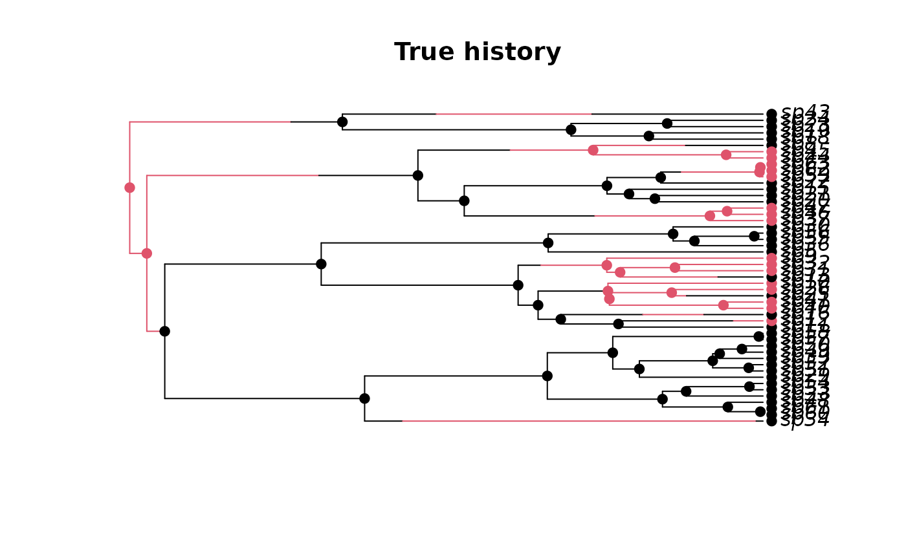
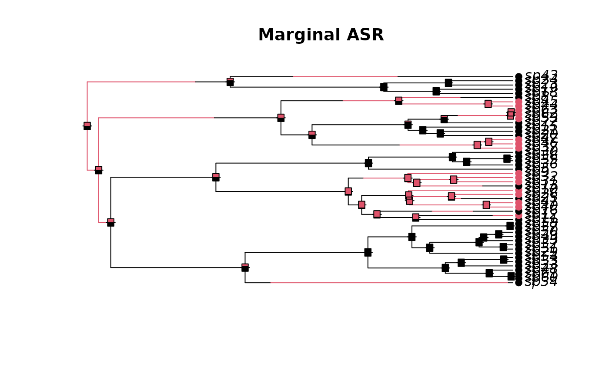
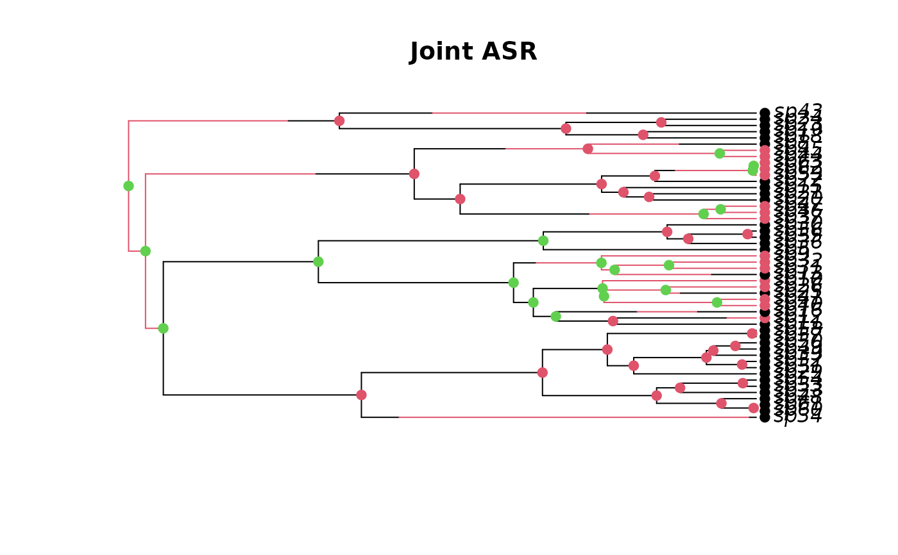
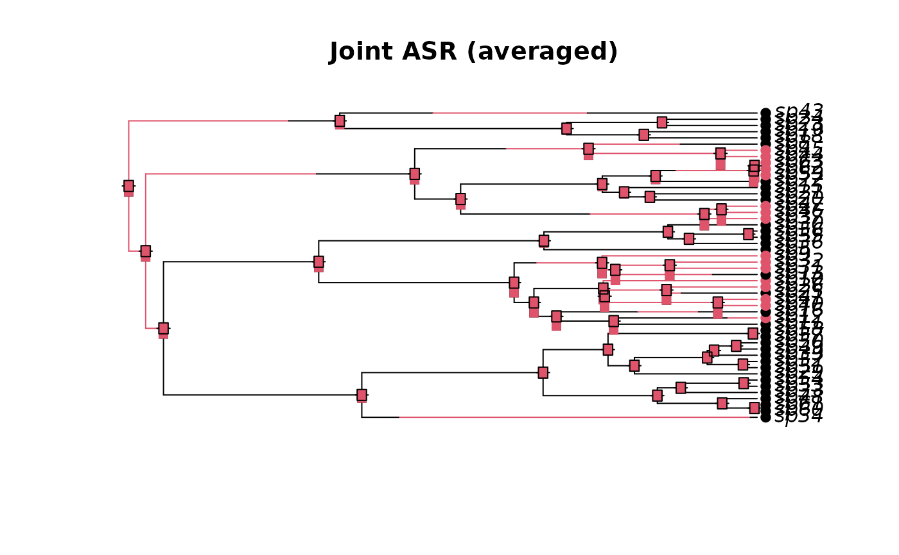
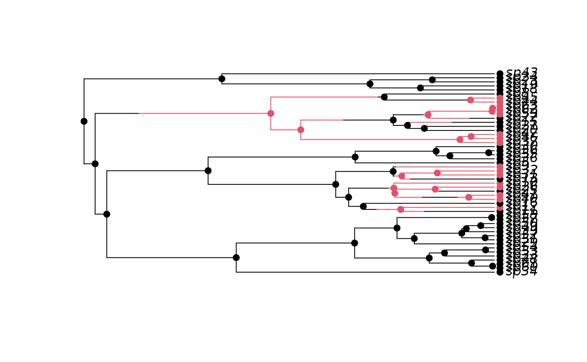

asr-mkn.RdPerform ancestral state reconstruction under Mk2 and other constant rate Markov models. Marginal, joint, and stochastic reconstructions are supported. Documentation is still in an early stage, and mostly in terms of examples.
# S3 method for class 'mkn'
make.asr.marginal(lik, ...)
# S3 method for class 'mkn'
make.asr.joint(lik, ...)
# S3 method for class 'mkn'
make.asr.stoch(lik, slim=FALSE, ...)A likelihood function, returned by make.mk2 or
make.mkn.
Should the history object be slimmed down?
Additional arguments; currently ignored.
Output will differ slightly when mk2 and mkn models are
used as lik, as mk2 uses states 0/1, while 2-state
mkn uses 1/2.
This is all quite slow. Faster versions are coming eventually.
These functions all return functions that generate different types of ancestral reconstruction.
## Start with a simple tree evolved under a constant rates birth-death
## model with asymetric character evolution
pars <- c(.1, .1, .03, .03, .03, .06)
set.seed(1)
phy <- trees(pars, "bisse", max.taxa=50, max.t=Inf, x0=0)[[1]]
## Here is the true history. The root node appears to be state 1 (red)
## at the root, despite specifying a root of state 0 (x0=0, in statement
## above). This is because the tree started with a single lineage, but
## had changed state by the time the first speciation event happened.
h <- history.from.sim.discrete(phy, 0:1)
plot(h, phy, main="True history")

## All of the methods need a likelihood function; build a mk2 function:
lik <- make.mk2(phy, phy$tip.state)
## Using the true parameters, compute the marginal ancestral state
## reconstructions:
st.m <- asr.marginal(lik, pars[5:6])
## There is still not a good stand-alone plotting command for nodes.
## For now, use ape's nodelabels().
plot(h, phy, main="Marginal ASR", show.node.state=FALSE)
nodelabels(thermo=t(st.m), piecol=1:2, cex=.5)

## Again, with the true parameters, a sample from the joint
## distribution:
st.j <- asr.joint(lik, pars[5:6])
## Plotting this sample against the true values.
plot(h, phy, main="Joint ASR", show.node.state=FALSE)
nodelabels(pch=19, col=st.j + 1)

## This is just one sample, and is not very accurate in this case! Make
## 1,000 such samples and average them:
st.j2 <- asr.joint(lik, pars[5:6], 1000)
st.j2.mean <- colMeans(st.j2)
plot(h, phy, main="Joint ASR (averaged)", show.node.state=FALSE)
nodelabels(thermo=1-st.j2.mean, piecol=1:2, cex=.5)

## Check the estimates against one another:
plot(st.m[2,], st.j2.mean, xlab="Marginal", ylab="Joint", las=1)
abline(0, 1)
## Finally, the stochastic character mapping. This uses samples from
## the joint distribution at its core.
st.s <- asr.stoch(lik, pars[5:6])
plot(st.s, phy)

## Again, multiple samples can be done at once. There is a function for
## summarising histories, but it is still in the works.
## Repeating the above with a two-state mkn model:
lik2 <- make.mkn(phy, phy$tip.state + 1, 2, FALSE)
## Everything works:
st2.m <- asr.marginal(lik2, pars[5:6])
st2.j <- asr.joint(lik2, pars[5:6], 100)
st2.s <- asr.stoch(lik2, pars[5:6])
## Marginal likelihoods agree:
all.equal(st.m, st2.m)
#> [1] TRUE
## Joint reconstructions are stochastic, so just check with a
## regression:
summary(lm(colMeans(st2.j) - 1 ~ colMeans(st.j2) - 1))
#>
#> Call:
#> lm(formula = colMeans(st2.j) - 1 ~ colMeans(st.j2) - 1)
#>
#> Residuals:
#> Min 1Q Median 3Q Max
#> -0.3390 -0.3276 -0.2179 0.2642 0.3337
#>
#> Coefficients:
#> Estimate Std. Error t value Pr(>|t|)
#> colMeans(st.j2) 0.3343 0.0282 11.86 7.23e-16 ***
#> ---
#> Signif. codes: 0 ‘***’ 0.001 ‘**’ 0.01 ‘*’ 0.05 ‘.’ 0.1 ‘ ’ 1
#>
#> Residual standard error: 0.2867 on 48 degrees of freedom
#> Multiple R-squared: 0.7454, Adjusted R-squared: 0.7401
#> F-statistic: 140.6 on 1 and 48 DF, p-value: 7.228e-16
#>
## Integrate parameter uncertainty, and see how far down the tree there
## is any real information on parameter states for this tree (this takes
## about 6s)
if (FALSE) { # \dontrun{
set.seed(1)
prior <- make.prior.exponential(.5)
samples <- mcmc(lik, pars[5:6], 1000, w=1, prior=prior, print.every=100)
st.m.avg <- rowMeans(apply(samples[2:3], 1, asr.joint, lik=lik))
plot(h, phy, main="MCMC Averaged ASR", show.node.state=FALSE)
nodelabels(thermo=1 - st.m.avg, piecol=1:2, cex=.5)
} # }